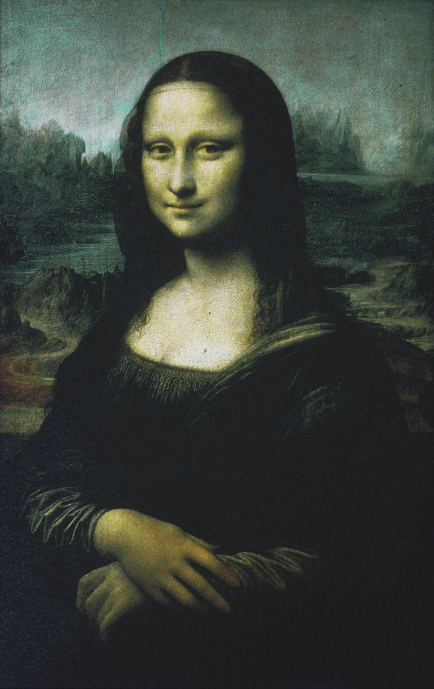
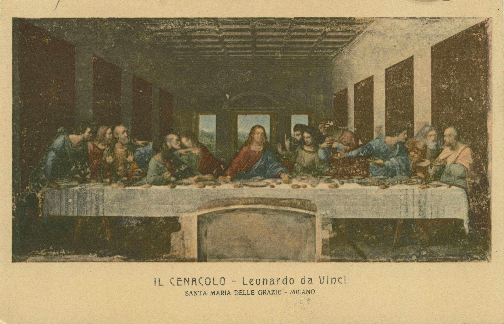

LESSON 7.01
Humanism and the Rebirth of Art
Interactive Lesson
📖 TODAY'S FOCUS
Why did a portrait of an ordinary woman change the history of art?
After the medieval centuries, artists in Italy turned their attention back to the human being: the real face, the living body, the dignity of one individual. They called it a rebirth, a Renaissance, and Leonardo da Vinci painted its quiet revolution into the soft smile of a merchant's wife. This lesson begins Semester 2 with the idea that reshaped Western art.
🎯 BY THE END OF THIS LESSON YOU WILL BE ABLE TO…
1
I will be able to explain what the Renaissance was and why it is called a rebirth of classical antiquity.
2
I will be able to define humanism and naturalism and recognize them in Renaissance painting.
3
I will be able to identify sfumato in Leonardo's work and analyze the Mona Lisa with the four-step method.
📋 WHAT YOU NEED FOR THIS LESSON
▶
A notebook or an open Word document; this lesson begins your Renaissance Masterpiece Analysis
▶
The medieval art of Unit 6 (flat, sacred, gold-ground figures) for comparison
📚 PART 1 · LOOK FIRST~12 MIN
👀 LOOK CLOSELY · A FACE THAT SEEMS ALIVE
Look at the woman on the left. She is not a saint or a queen. Her eyes follow you; the corners of her mouth blur into shadow so her expression seems to shift. Now look at the gathering on the right: thirteen men around a table, every face and gesture different. What is new here, compared with the flat, golden figures of the Middle Ages?

Mona Lisa, Leonardo da Vinci, 1503–1507. Louvre, Paris. Public domain.

The Last Supper (Il Cenacolo), Leonardo da Vinci, 1495–1498. Santa Maria delle Grazie, Milan. Public domain reproduction.
Beginning in Italy around 1400, artists, writers, and thinkers turned back to the art and learning of ancient Greece and Rome. They felt they were waking culture from a long sleep, so they spoke of a rebirth. The French word for it, Renaissance, is the name we still use. The Renaissance was not only about copying the ancients; it was about a new confidence that human beings, the human mind, and the human body were worth studying with the greatest care.
Compare these two works with Unit 6. Medieval figures often float on flat gold, deliberately otherworldly. Leonardo's people occupy real space, breathe real air, and feel like individuals. That shift is the heart of this unit.
📚 PART 2 · HUMANISM, NATURALISM, AND SOFT EDGES~16 MIN
Three ideas drive Renaissance painting. Humanism was a renewed focus on human beings: their reason, their achievements, their individual dignity, studied through close observation of the real world. Naturalism is the result in art: figures with believable weight, light, anatomy, and emotion, painted as the eye actually sees them rather than as a flat symbol. And to make a face feel truly alive, Leonardo perfected sfumato, from the Italian word for smoke: edges and shadows blended so softly that there is no hard outline, only a gradual passage from light to dark.
None of this happened for free. Renaissance artists worked for a patron: a wealthy family, a church, or a ruler who paid for the work and often chose its subject. The banking Medici of Florence, dukes, and popes competed to commission the greatest artists, and that money helped make the period possible.
Look back at the Mona Lisa with these terms in hand. The humanism is in the choice of subject: a private individual treated with the dignity once reserved for saints. The naturalism is in her solid hands and the air-softened landscape behind her. The sfumato is in the corners of her eyes and mouth, where the blur makes her expression seem to change as you watch.
📚 PART 3 · READ THE PAINTING~15 MIN
🔍 ARTWORK SPOTLIGHT
Mona Lisa (1503–1507)
Leonardo da Vinci · Louvre, Paris (Italian Renaissance)
Describe: A seated woman turns slightly toward us, hands folded, against a hazy landscape of winding paths, water, and distant mountains. She wears dark clothing and a faint smile.
Analyze: Soft sfumato dissolves the outlines of her eyes and mouth; the pyramid of her pose gives stable balance; cool, blurred distance creates deep space behind warm, solid form in the figure.
Interpret: The painting treats one ordinary person with intense attention and mystery. One reading is that it announces the humanist conviction that an individual mind and presence are worth this much looking.
Judge: It succeeds completely. Centuries later, the elusive expression still draws viewers in, which is exactly the lifelike presence Leonardo was after.
⚠️ WORTH KNOWING · AI & THE WORK OF LOOKING
An AI image tool can output a “Renaissance-style portrait” in seconds, blending soft edges and warm light on command. What it cannot do is the thing humanism was built on: the patient observation of one real person. Leonardo studied a living face, anatomy, and light for years. The value of the Mona Lisa is in that looking, not in the surface style. AI can imitate the look; it cannot perform the study.
📖 VOCABULARY FROM THIS LESSON
| Renaissance | The rebirth of classical antiquity in European art and thought, beginning in Italy around 1400. |
| Humanism | A renewed focus on human beings: their reason, achievements, and individual dignity. |
| Naturalism | Depicting figures with realistic weight, light, anatomy, and emotion, as the eye sees them. |
| Sfumato | Leonardo's technique of soft, smoky blending with no hard outlines. |
| Patron | The person or institution that pays for an artwork and often chooses its subject. |
✏️ NOW YOU TRY · IN YOUR NOTEBOOK
Pick either the Mona Lisa or The Last Supper. In four short lines, write one Describe, one Analyze, one Interpret, and one Judge sentence about it, using at least two terms from today (humanism, naturalism, sfumato, patron). Keep these notes; they begin your Renaissance Masterpiece Analysis.
➡️ WHAT YOU’LL DO NEXT
1
Lesson 7.02 · Linear Perspective
Learn how Renaissance artists built deep, believable space on a flat surface.
2
Renaissance Masterpiece Analysis (assignment)
Write a full four-step analysis of the Mona Lisa or the School of Athens.
💪 WHY THIS MATTERS
The Renaissance is the moment Western art turns its full attention to the human being: the real face, the thinking mind, the dignity of the individual. Once artists decided that the visible world was worth studying this closely, they needed new tools to render it. The next lesson takes up the most powerful of those tools, the geometry that lets a flat panel open into deep space.
Optima Academy Online · ART HISTORY & CRITICISM · Semester 2 · Student Lesson Page
Lesson 7.01 · Humanism and the Rebirth of Art
© Optima Academy Online · An Education Experience Company